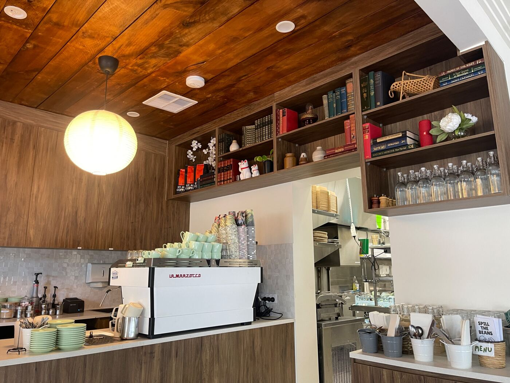
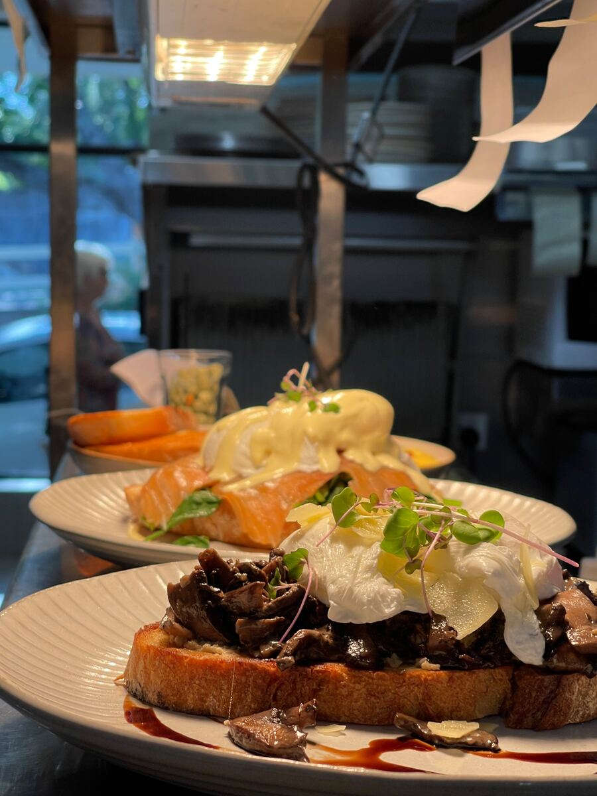
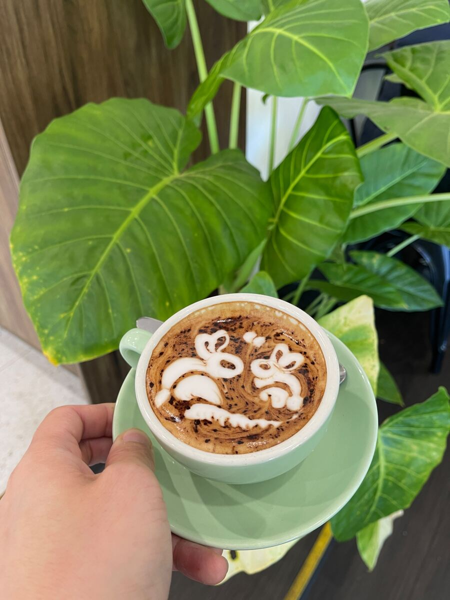
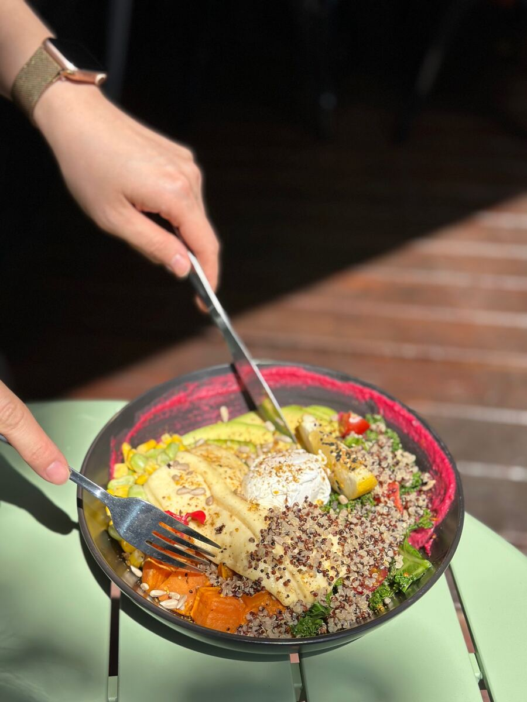

VISIT US
89 Devereux Rd, Linden Park SA 5065 (08) 8338 3899 admin@spill.cafeMonday – Sunday · 7AM – 3PM
15% surcharge applies on Public Holidays

FROM LOCAL TO LEGEND PLACE
Asian-fusion cafe in Linden Park, Adelaide
SPILL THE BEANS CAFE brings bold Asian flavours to breakfast and brunch, alongside ST. ALi coffee, matcha and the easygoing atmosphere of a local Adelaide cafe.
Near Burnside in Adelaide's eastern suburbs, our dog-friendly verandah welcomes coffee runs, brunch dates and catch-ups with your favourite people (and pups).